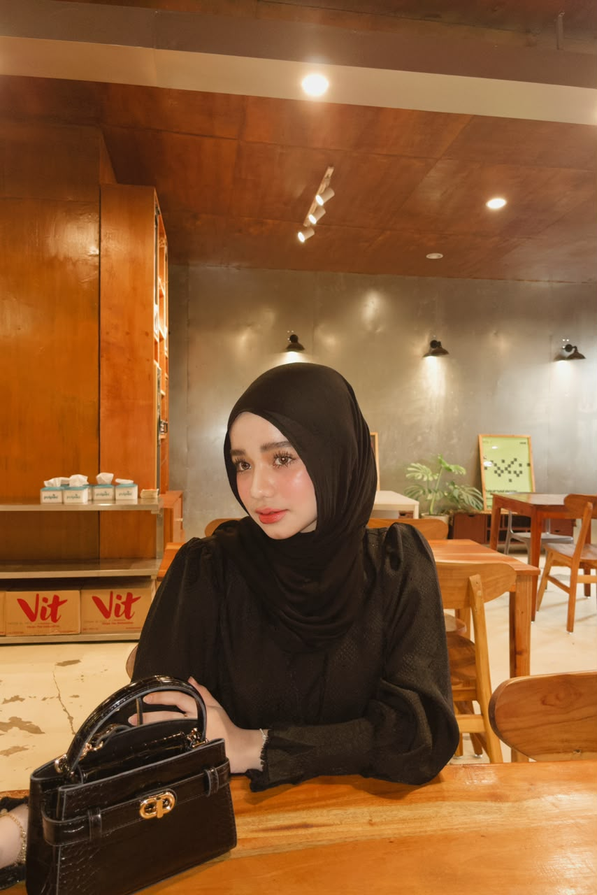
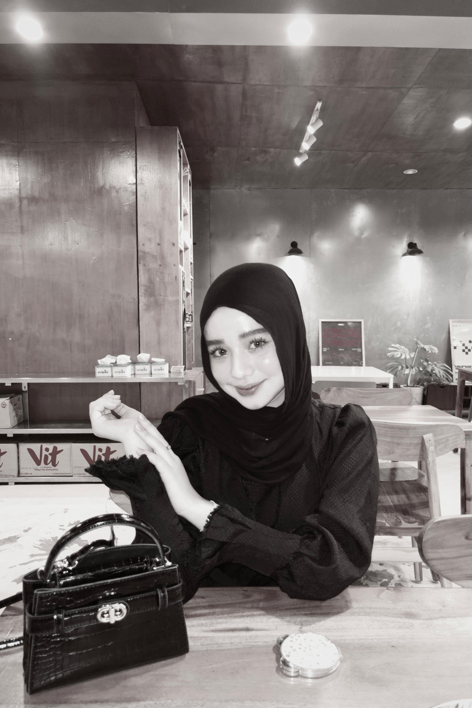
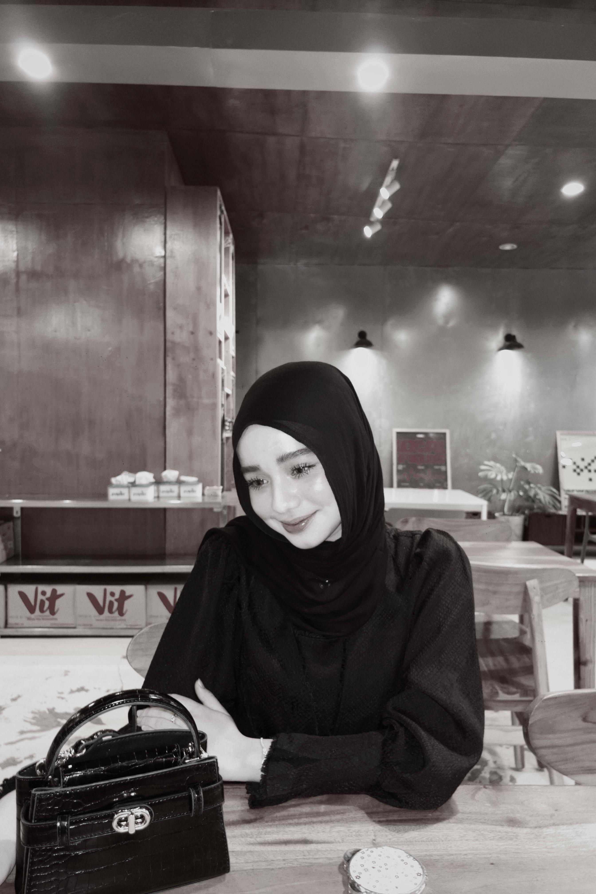
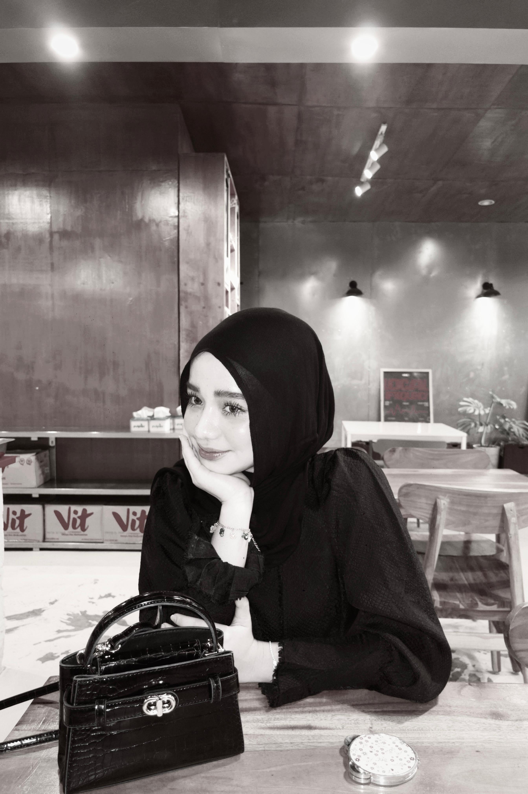

the way u look
you somehow make "pretty" look effortless. every little detail about you just feels right.
something has been quietly growing behind this gate, just for you. 🌷
belum bener tuh, coba lagi ya
a little garden, grown just for you.
is looking so pretty today
you somehow get prettier every day. no cap. kalo hari kamu lagi berat, inget aja kamu u so gorgeous dan hari hari kamu emang worth it buat dijalanin.
masuk ke garden inikoleksi kecil
five pictures that never lost their magic. still as beautiful as the day they were taken.




scroll pelan pelan
field notes
list yang terus nambah, sama kaya garden ini
you somehow make "pretty" look effortless. every little detail about you just feels right.
your smile has this quiet kind of magic. it makes everything around you feel a little lighter.
i could look into your eyes forever. they're calm, beautiful, and somehow say more than words ever could.
it's not just your skin, it's your whole presence. you have a glow that no lighting could ever create.
every picture, every angle, every little expression... somehow you always look effortlessly beautiful.
your voice, your laugh, the way you talk, the way you exist... everything about you just feels beautiful.
sealed with a petal
kamu salah satu orang paling cantik yang pernah ada, no cap. every single day kamu makin gorgeous aja, that's just facts .
kalo hari kamu lagi berat, inget aja kamu masih stay beautiful n strong dan itu udah cukup buat terus jalan hari ini.
u so beautiful — bukan cuma looks nya doang, tapi literally semuanya, dari cara kamu ngomong sampe cara kamu ketawa, everything about kamu tuh just works.
semoga hari hari kamu selalu se-cantik diri kamu sendiri. keep shining, keep glowing, dan dimanapun kamu berada, tetep jadi versi paling gorgeous dari diri kamu.
our soundtrack
lagu yang muter terus pas garden ini tumbuh, terus terngiang sampe sekarang. press play aja, biarin dia stay di background.
next bloom
the last page, the first of many
kamu cantik dari dulu, sekarang, sampe nanti nanti.
buat kamu — terus terusan, dan tiap hari garden ini makin rame karna kamu ada di dalemnya. 🌹